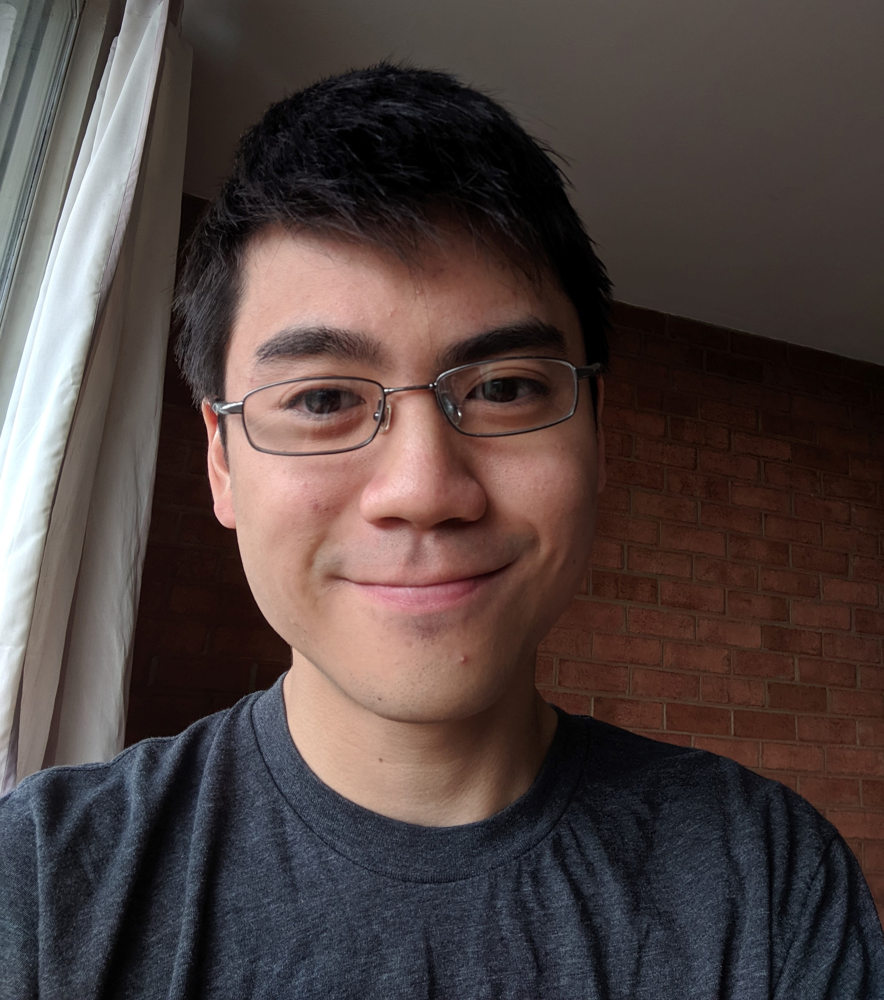

Hi, I'm Aidan!
- I'm on the job market for teaching-focused faculty positions! Feel free to reach out to me at aidan.w.sanPLEASEIGNORETHISPART@gmail.com.
- I'm a 7th year PhD candidate born in Virginia and studying at the University of Virginia.
- I'm happily studying Natural Language Processing and the intersection of AI and Education advised by Prof. Yangfeng Ji.
- I'm grateful to be fully funded by the Dean's Scholar Fellowship (3 years) and the Distinguished Fellowship.
- I received my undergraduate degree from the University of Illinois at Urbana-Champaign Magna Cum Laude in Computer Science + Linguistics,
and my MCS at UVA.
- I'm currently working on evaluating language model robustness and consistency.
- In my freetime, I enjoy playing guitar, playing board games, and cooking.

Contact Info:
Email: aidan.w.sanPLEASEIGNORETHISPART@gmail.com
Pronouns: he or they (no preference)
Experience:
- CS2120 Instructor (Spring 2025) - Instructor of record for one section of Discrete Math (134 students)
- CS1111 Instructor (Fall 2024) - Instructor of record for one section of Intro to Programming (Accelerated) (78 students)
- CS1110 Instructor (Fall 2023) - Instructor of record for one section of Intro to Programming (30 students)
- CS1110 Instructor (Spring 2022) - Instructor of record for one section of Intro to Programming (138 students)
- MicrosoftIntern (Summer 2024) - Explored LLM robustness on the Deep Learning team
- Amazon Applied Science Intern (Summer 2022) - Designed a dataset to train neural web extraction models on the Alexa AI team
- Amazon Applied Science Intern (Summer 2021) - Designed a dataset to train and evaluate language models on the Alexa AI team
- Grail SWE Intern (Summer19) - Wrote Go code to allow switching of instruments during assays on the automation team
- Facebook SWE Intern (Summer18) - Wrote Python code to improve translation data quality on the Applied Machine Learning team
- Space Chair of UVA CSGSG (Spring19-Fall21) - Managed budget for the CS lounge and organized events
- Cofounder of the UVA NLP Reading Group (Fall19-Spring20)
- Founder/Chair of ACM Special Interest Group for Natural Language Learning (Fall18-Spring19) - Developed course material about NLP topics